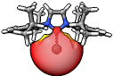

SEQCROW Tutorials
Welcome to the SEQCROW Tutorials! Here, you can find tutorials on using the functionality added in the SEQCROW bundle. These tutorials are still under construction, and more are on the way.

|
Change Substituents |

|
Adding to the AaronTools Libraries |
|  | Calculating Buried Volume |

|
Calculating Sterimol Parameters |